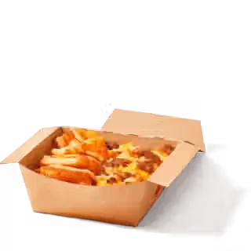
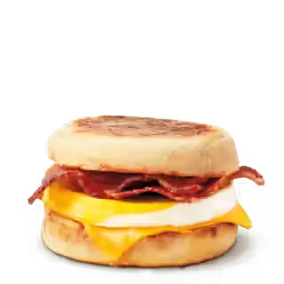
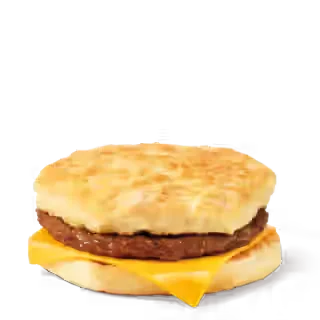
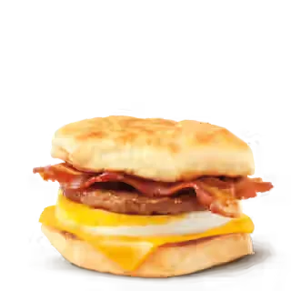
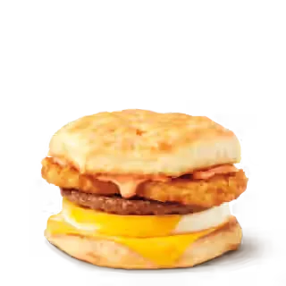
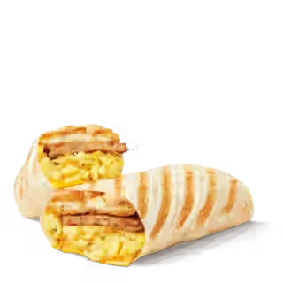
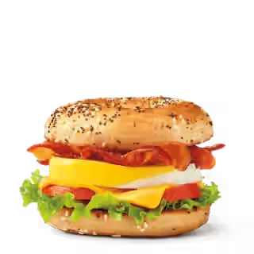

Scrambled Egg Loaded Box
$5.59
Unofficial fan guide - not affiliated with Tim Hortons
Breakfast sandwiches, wraps, omelette bites and hashbrowns — the full Tim Hortons breakfast lineup with current listed prices.
Prices last verified: September 26, 2026
This is an independent, unofficial guide to the Tim Hortons Canada menu. It is not affiliated with, endorsed by, or sponsored by Tim Hortons or Restaurant Brands International. Prices and calories are listed reference estimates in CAD, before tax, and vary by location, province and over time. They are sourced from a public menu reference and may not reflect current pricing at every location. Product names and images belong to their respective owners. See Sources for details.
The Tim Hortons breakfast menu in Canada runs from a $2.19 Hashbrown to $5.59 wraps and loaded boxes. It includes breakfast sandwiches ($2.99–$5.59), the Farmer's Wrap, Omelette Bites and the Bagel BELT. Tim Hortons has served breakfast all day at participating restaurants since July 25, 2018, but some items are morning-only.

$5.59
$3.99
$4.49

$4.49
$3.99
$3.99

$2.99

$5.49

$5.59

$5.59
$5.59

$5.59
$2.19
Tim Hortons breakfast comes in three groups: hot breakfast sandwiches, wraps and loaded boxes, and lighter egg bites and sides. Almost all of them are built on eggs. Since February 6, 2025, participating restaurants across Canada have cracked 100% Canadian Grade A eggs in the kitchen for their scrambled-egg items, and the chain carries the Egg Quality Assurance (EQA) mark on its breakfast sandwiches. Our Tim Hortons ingredients guide covers egg, dairy and coffee sourcing.
The classic sandwich is egg and cheese with bacon, sausage or neither, served on an English muffin or a homestyle biscuit. The bread is the main calorie swing: an Egg & Cheese English Muffin is 270 calories, and the same filling on a biscuit is 350. Bigger builds include the Double Stacked Breakfast Sandwich, the Farmer's Breakfast Sandwich and the Bagel BELT (bacon, egg, lettuce and tomato on a bagel).
The Farmer's Breakfast Wrap puts egg, a hash brown and sauce in a tortilla. The Scrambled Egg Loaded Wrap, launched in 2025, pairs freshly cracked scrambled egg with a hash brown and the Farmer's Wrap sauce. The Scrambled Egg Loaded Box serves the same fillings in a bowl without the tortilla, which drops it to 440 calories for the plain version.
For a smaller breakfast, Omelette Bites come two to an order, in Bacon & Cheese (210 calories) or Spinach & Egg White (130 calories). The Spinach & Feta Savoury Egg Pastry and the $2.19 Hashbrown round out the list. A White Cheddar Hashbrown, seasoned with white cheddar and herbs, joined the menu on September 1, 2026.
Most Tim Hortons breakfast items cost between $3.99 and $5.59 before tax. A Hashbrown and a medium coffee together come to about $4 before tax. Prices below are the listed reference prices shown on this page and vary by province and restaurant. Deciding where to eat? See how these prices compare in Tim Hortons vs A&W breakfast.
| Price band | Items |
|---|---|
| Under $3 | Hashbrown ($2.19), Simply Sausage Sandwich ($2.99) |
| $3.99 | Egg & Cheese Breakfast Sandwich, Omelette Bites, Spinach & Feta Savoury Egg Pastry |
| $4.49 | Sausage Breakfast Sandwich, Bacon Breakfast Sandwich |
| $5.49 – $5.59 | Double Stacked Sandwich ($5.49); Farmer's Sandwich, Farmer's Wrap, Scrambled Egg Loaded Wrap and Box, Bagel BELT ($5.59) |
Tim Hortons breakfast items range from 120 calories for a Hash Brown to 700 for a Sausage & Bacon Farmer's Wrap. The figures below come from the official Tim Hortons Canadian Nutrition Guide (August 2025). Tim Hortons notes that results can vary with how each item is assembled in the restaurant. For lunch, donuts and drinks too, see Tim Hortons calories and nutrition facts for the whole menu.
| Item (official name) | Calories | Protein | Fat | Sodium |
|---|---|---|---|---|
| Hash Brown | 120 | 1 g | 6 g | 220 mg |
| Spinach & Egg White Omelette Bites (2) | 130 | 13 g | 6 g | 410 mg |
| Bacon & Cheese Omelette Bites (2) | 210 | 15 g | 14 g | 500 mg |
| Egg & Cheese English Muffin | 270 | 14 g | 12 g | 500 mg |
| Bacon English Muffin | 330 | 17 g | 16 g | 710 mg |
| Egg & Cheese Homestyle Biscuit | 350 | 14 g | 18 g | 720 mg |
| Scrambled Egg Loaded Box | 440 | 17 g | 26 g | 810 mg |
| Sausage English Muffin | 450 | 19 g | 29 g | 680 mg |
| Plain Bagel BELT Sandwich | 490 | 22 g | 16 g | 860 mg |
| Bacon Farmer's Wrap | 520 | 19 g | 27 g | 970 mg |
| Sausage Homestyle Biscuit | 530 | 20 g | 35 g | 900 mg |
| Sausage Scrambled Egg Loaded Box | 600 | 24 g | 40 g | 1,050 mg |
| Sausage Farmer's Wrap | 640 | 21 g | 40 g | 940 mg |
| Sausage Scrambled Egg Loaded Wrap | 650 | 22 g | 40 g | 1,020 mg |
| Sausage & Bacon Farmer's Wrap | 700 | 25 g | 44 g | 1,160 mg |
The best Tim Hortons breakfast depends on what you are optimising for. Protein per 100 calories is the most useful single number: it shows which items fill you up without much extra energy.
| If you want… | Order | Why (official Aug 2025 data) |
|---|---|---|
| Most protein per calorie | Spinach & Egg White Omelette Bites | 13 g protein in 130 calories (10 g per 100 cal) |
| A light sandwich | Egg & Cheese on an English muffin | 270 calories, 14 g protein |
| The most protein overall | Sausage & Bacon Farmer's Wrap | 25 g protein, but 700 calories and 1,160 mg sodium |
| High protein, fewer calories | Plain Bagel BELT | 22 g protein in 490 calories |
| The cheapest breakfast | Hashbrown or Simply Sausage Sandwich | $2.19 and $2.99 before tax |
| Less sodium | Hash Brown or Spinach & Egg White Omelette Bites | 220 mg and 410 mg |
Switching bread is the easiest change. Moving any sausage or bacon sandwich from a biscuit to an English muffin saves 80 calories and 6 g of fat.
Yes, at participating restaurants. Tim Hortons rolled out "Breakfast Anytime" across Canada on July 25, 2018, after a pilot in Ontario that year. Breakfast sandwiches on a biscuit or English muffin and hash browns became available all day where restaurants take part.
It is not universal, though. Restaurants are franchised and set their own hours, and not every breakfast item is all-day. When the Scrambled Egg Loaded Wraps launched in 2025, Tim Hortons listed them from 4 a.m. to 11 a.m. only. For later-in-the-day cravings, check the item in the Tim Hortons app for your restaurant, or see our Tim Hortons hours page.
Nearly every breakfast item contains egg, and the sandwiches, wraps and pastries also contain wheat and milk. Tim Hortons prepares food in shared kitchens and says its nutrition figures come from standard recipes that can change. If you have an allergy, check the ingredients in the app or ask the restaurant. Tim Hortons is not halal-certified as a chain; see Is Tim Hortons halal? for the details.
Yes, at participating restaurants in Canada. Tim Hortons launched all-day breakfast nationally on July 25, 2018, but some items, such as the Scrambled Egg Loaded Wraps, were launched as morning-only.
It depends on the restaurant. Participating locations serve breakfast sandwiches and hash browns all day, while morning-only items such as the Scrambled Egg Loaded Wraps were listed until 11 a.m. at launch.
The Hashbrown is the cheapest breakfast item at $2.19, followed by the Simply Sausage Sandwich at $2.99. Both are listed reference prices before tax and vary by restaurant.
The Spinach & Egg White Omelette Bites are the leanest choice at 130 calories with 13 g of protein. For a sandwich, the Egg & Cheese English Muffin is 270 calories with 14 g of protein.
The Sausage & Bacon Farmer's Wrap has the most, at 25 g of protein. The Sausage Scrambled Egg Loaded Box is close behind at 24 g.
Yes. Since February 6, 2025, participating restaurants in Canada have made their scrambled eggs from 100% Canadian Grade A eggs cracked fresh in the kitchen.
A Farmer's Wrap holds egg, a hash brown, sauce and your choice of bacon, sausage or both in a tortilla. The Bacon Farmer's Wrap is 520 calories and the Sausage & Bacon version is 700.
The English muffin is lighter. The same Egg & Cheese filling is 270 calories on an English muffin and 350 on a homestyle biscuit.
A Tim Hortons Hash Brown has 120 calories, 6 g of fat and 220 mg of sodium, according to the August 2025 Canadian nutrition guide.
Yes. The Tim Hortons app shows the breakfast items your restaurant is serving right now, and you can order them for pickup or delivery.
No. Tim Hortons restaurants are franchised, so prices vary by province and location. The prices on this page are listed reference prices, before tax.